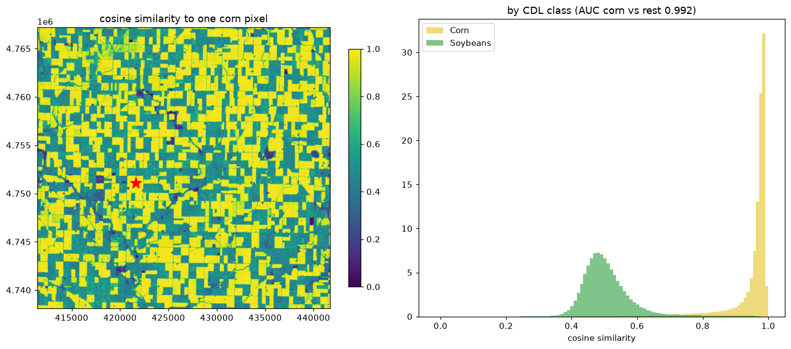
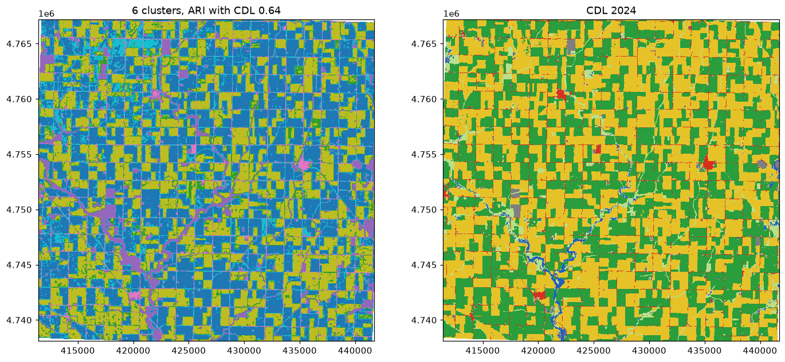
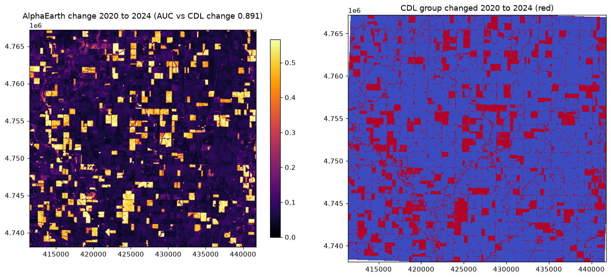

AlphaEarth Foundations: Precomputed Embeddings for the Whole Planet
Every notebook so far ran a model to get embeddings. Google DeepMind’s AlphaEarth Foundations turns that around: the model has already been run over the whole land surface, every year since 2017, and the result is published as a 64-band image at 10 m, the Satellite Embedding dataset, in Earth Engine and as free public files that need no account. No GPU, no preprocessing, no input contract: each pixel already carries a summary of a year of optical, radar, lidar, climate and other observations. This notebook reads it for the Iowa Corn Belt from the public copy, looks at what the 64 dimensions show, finds fields like a chosen one, clusters the landscape without labels, detects change between years, and compares AlphaEarth with DOFA and SSL4EO on the same crop probe.
Overview
Embedding fields
AlphaEarth Foundations (Brown et al. 2025) is a model that learns an embedding field: a function from a place and a time period to a vector. It was trained on more than 3 billion observations from Sentinel-1 and 2, Landsat 8 and 9, GEDI lidar, the GLO-30 elevation model, ERA5 climate, GRACE gravity and text descriptions, with objectives that reconstruct those sources and keep the vectors consistent in space and time. The published product summarises each calendar year at each 10 m pixel.
Property
Value
Earth Engine collection
GOOGLE/SATELLITE_EMBEDDING/V1/ANNUAL
Bands
A00 to A63, 64 float values
Resolution
10 m, in local UTM tiles
Time
one image per calendar year, 2017 onward
Length
every vector has length 1 (unit sphere)
Licence
CC BY 4.0 (check the dataset page)
What unit length means
Because every vector has length 1, the dot product of two pixels is their cosine similarity: 1 for identical, near 0 for unrelated. Similarity search and change detection are therefore a few lines of arithmetic. Averaging pixels shortens the vector, so averaged embeddings are re-normalised before comparing them.
Strengths and limits
Strengths: no model to run; the same representation everywhere; many sensors combined, so clouds matter less; a year of phenology in each vector.
Limits: one vector per year (no within-season maps); the dimensions have no names; the product is computed by Google and its exact inputs cannot be audited pixel by pixel; access through Earth Engine; licence terms apply.
Three ways to get the embeddings
Source
Format
Account
Best for
Source Cooperative GeoZarr mosaic
one global Zarr array, EPSG:4326, ~10 m, chunks of 256 x 256 pixels x 64 bands
none
points and areas up to tens of kilometres
Google Cloud Storage
8192 x 8192 pixel Cloud Optimized GeoTIFFs in UTM zones, with overviews
none (“provider pays”)
coarse maps of large regions
Earth Engine
ee.ImageCollection
Earth Engine account and registered Cloud project
server-side analysis
The public files store each value as an 8-bit integer to save space: v = sign(x) * sqrt(|x|) * 127.5, with -128 for no data. fm.alphaearth_dequantize inverts it, x = (v / 127.5) ** 2 * sign(v). Small differences from the Earth Engine floats come from that quantization. This notebook uses the Zarr mosaic; every read is cached in outputs/, so the notebook reruns offline.
AlphaEarth with GeoLattice
Task
GeoLattice
a region on any grid
fm.alphaearth_to_xarray(region, year, like=grid) or scale=, crs= (source="zarr", "gcs" or "earthengine")
values at points
fm.sample_alphaearth(points, year) (one row per point, A00 to A63)
Know the three sources of the embeddings and read them without an account.
Read embeddings onto an existing grid and view them.
Use cosine similarity to find every field that looks like a chosen one.
Cluster the landscape without labels and compare the clusters with the CDL.
Detect change between two years and relate it to crop rotation.
Compare AlphaEarth with DOFA and SSL4EO embeddings on the same crop probe.
Sample embeddings at soil sampling points for the next notebook.
Data
Dataset
Content
AlphaEarth Satellite Embedding
2020 and 2024, Corn Belt study area, on the 20 m grid of the Sentinel-2 cube
Corn Belt Sentinel-2 cube
31 August 2024, 10 bands, 20 m (for DOFA and SSL4EO)
Cropland Data Layer
2020 and 2024, six groups
Great Plains soil samples
570 topsoil SOC points (sampled here, used in notebook 09_11_08)
Contents
Setup
Where the embeddings live
Reading two years for the Corn Belt
What the 64 dimensions show
Fields like this one
Clusters without labels
Change between 2020 and 2024
AlphaEarth, DOFA and SSL4EO on the same probe
Embeddings at soil sampling points
Summary and exercises
Setup
The embeddings are read anonymously from public copies over the internet (a few hundred MB); reads are cached in outputs/.
Installation. This notebook needs installation option 6 (every GeoLattice module): pip install "geolattice[all]". See “Installation options” in the GeoLattice README. It also uses geolattice[rsense-foundation], which no GeoLattice option installs: pip install "geolattice[rsense-foundation]".
Code
import os # environment variablesos.environ.setdefault("USE_TF", "0") # keep transformers from loading TensorFlowimport time # timingimport warnings # warning controlwarnings.filterwarnings("ignore") # hide routine library warningsfrom pathlib import Path # file pathsimport matplotlib.pyplot as plt # figuresimport numpy as np # arraysimport pandas as pd # tablesimport rioxarray # noqa: F401 (registers the .rio accessor)import torch # PyTorch: every model runs on itimport xarray as xr # labelled rastersimport geolattice # GeoLatticeimport geolattice.rsense.foundation_models as fm # catalog, loaders, embeddings and probesplt.rcParams.update({"figure.dpi": 110}) # figure resolutionDATA = Path("../../../../Data/08_remote_sensing") # remote sensing data folderIC = DATA /"09_09_image_classification"# data shared with the image classification chapterCAP = DATA /"08_11_Capstones"# data shared with the capstonesOUT = Path("outputs") # results written by this notebookOUT.mkdir(exist_ok=True) # create it if neededDEVICE ="cuda"if torch.cuda.is_available() else"cpu"# run models on the GPU when there is oneSEED =0# one seed for every random stepnp.random.seed(SEED) # NumPytorch.manual_seed(SEED) # PyTorchprint("GeoLattice", geolattice.__version__, "| PyTorch", torch.__version__, "| device", DEVICE) # versions usedif DEVICE =="cuda": # name the GPUprint("GPU:", torch.cuda.get_device_name(0)) # GPU modelimport os # environment variablesimport geopandas as gpd # vector datafrom shapely.geometry import box # bounding boxesfrom sklearn.metrics import adjusted_rand_score, roc_auc_score # scoresCUBE = IC /"Corn_belt"/"cache_20m"# Corn Belt cubesGP = DATA.parent /"00_shared"/"data_geostatistics"/"Data_GP"/"GP_POINT_SOC.shp"# Great Plains soil samplesCLASSES = ["Corn", "Soybeans", "Grass/pasture", "Developed", "Wetland/forest", "Other"] # CDL groups
The Zarr mosaic is opened lazily: only its metadata is read. Its single array has the dimensions (year, band, y, x); one chunk holds all 64 values of a 256 x 256 pixel block, so a point costs one small request. The Cloud Storage index lists every GeoTIFF tile by year and bounding box.
Code
arr = fm._aef_array() # the public Zarr array (metadata only)print("Zarr mosaic:", fm.ALPHAEARTH_ZARR, "| shape (year, band, y, x):", arr.shape, "| chunks:", arr.chunks, "|", arr.dtype) # layoutidx = fm.alphaearth_index() # GeoTIFF tiles on Google Cloud Storageprint("GeoTIFF tiles:", len(idx), "from", idx["year"].min(), "to", idx["year"].max()) # coverager, c =int((fm._AEF_Y0 -42.92) / fm._AEF_GSD), int((-93.9- fm._AEF_X0) / fm._AEF_GSD) # one Corn Belt pixelraw = np.asarray(arr[2024-2017, :8, r, c]) # its first eight raw values in 2024print("stored int8:", raw, "| as floats:", fm.alphaearth_dequantize(raw).round(4)) # quantization
fm.alphaearth_to_xarray(..., like=grid) reads the box covering the CDL grid from the Zarr mosaic at its native resolution (about 10 m in latitude and longitude) and puts it on the 20 m UTM grid of the Sentinel-2 cube, so every pixel lines up with the CDL. About 2.2 million pixels x 64 values per year; the first run takes several minutes.
Code
cdl_all = xr.open_dataset(CUBE /"labels_20m.nc")["cdl"].load() # CDL 2020 to 2025 on the 20 m gridgrid = cdl_all.sel(year=2024).rio.write_crs("EPSG:32615") # target gridcache = {y: OUT /f"alphaearth_cornbelt_{y}_20m.nc"for y in (2020, 2024)} # cached readsae = {} # embeddings per yearfor y, path in cache.items(): # both yearsifnot path.exists(): # read once t0 = time.perf_counter() # start the clock da = fm.alphaearth_to_xarray(None, y, like=grid) # (64, y, x) on the CDL grid, from the Zarr mosaic da.drop_vars("spatial_ref", errors="ignore").to_netcdf(path) # cacheprint(y, f"read in {time.perf_counter() - t0:.0f} s") # timing ae[y] = xr.open_dataarray(path).rio.write_crs("EPSG:32615") # (embedding, y, x)print({y: dict(a.sizes) for y, a in ae.items()}) # sizesnorms = np.linalg.norm(ae[2024].values.reshape(64, -1), axis=0) # vector lengthsprint(f"vector length: median {np.nanmedian(norms):.4f}, 1st to 99th percentile {np.nanpercentile(norms, 1):.4f} to {np.nanpercentile(norms, 99):.4f}") # unit length check
{2020: {'embedding': 64, 'y': 1456, 'x': 1516}, 2024: {'embedding': 64, 'y': 1456, 'x': 1516}}
vector length: median 1.0001, 1st to 99th percentile 0.9956 to 1.0046
What the 64 dimensions show
Three single dimensions shown as RGB, and the first three principal components of all 64, next to the CDL of the same year.
Even three raw dimensions show the field pattern, and the first three principal components of all 64 reproduce the CDL almost field for field: one colour for corn, another for soybeans, a third for the grass and wetland strips along the streams, small dots for farmsteads and a thin grid for the roads. Each vector summarizes a whole year of observations, so the crop of the year, not the look of one day, is what dominates it.
Fields like this one
One pixel in the middle of a large 2024 corn field is the query. fm.similarity_map computes its cosine similarity with every pixel; thresholding the map gives “fields like this one”, scored against the CDL corn class.
Code
corn = (grid.values ==0) # CDL corn pixelsfrom scipy import ndimage # distance inside fieldsdepth = ndimage.distance_transform_edt(corn) # distance to the nearest non-corn pixelqy, qx = np.unravel_index(np.argmax(depth), depth.shape) # the most interior corn pixelsim = fm.similarity_map(ae[2024], ae[2024].isel(y=qy, x=qx)) # cosine similarity to itvalid = grid.values >=0# labelled pixelsauc = roc_auc_score(corn[valid], np.nan_to_num(sim.values[valid])) # how well similarity ranks corn firstfig, ax = plt.subplots(1, 2, figsize=(13, 5.8)) # map and histogramim = ax[0].imshow(sim, cmap="viridis", vmin=0, vmax=1, extent=ext); plt.colorbar(im, ax=ax[0], shrink=0.8) # similarity mapax[0].plot(float(grid.x[qx]), float(grid.y[qy]), "r*", ms=14); ax[0].set_title("cosine similarity to one corn pixel") # queryfor k, c in [(0, "Corn"), (1, "Soybeans")]: # two crops ax[1].hist(sim.values[grid.values == k], 100, alpha=0.6, label=c, color=COLORS[k], density=True) # distributionsax[1].legend(); ax[1].set_xlabel("cosine similarity"); ax[1].set_title(f"by CDL class (AUC corn vs rest {auc:.3f})") # labelsplt.tight_layout(); plt.show() # draw

One pixel is enough. Corn pixels have cosine similarities near 1 to the query, soybean pixels mostly between 0.4 and 0.6, and the similarity ranks corn above everything else with an AUC of about 0.99. A threshold anywhere between 0.75 and 0.85 would give a corn map with no training beyond the single query. This works because a year of observations separates crops with different calendars so well; classes that look alike all year, such as different grass covers, would not separate like this.
Clusters without labels
K-means with six clusters on a random sample of pixels, applied to the whole map, compared with the six CDL groups by the adjusted Rand index (ARI).
Code
from sklearn.cluster import KMeans # clusteringX = ae[2024].values.reshape(64, -1).T # (pixels, 64)okp = np.isfinite(X).all(1) & (grid.values.ravel() >=0) # labelled pixels with embeddingsrng = np.random.default_rng(SEED); samp = rng.choice(np.flatnonzero(okp), 50000, replace=False) # 50,000 for fittingkm = KMeans(6, n_init=10, random_state=SEED).fit(X[samp]) # six clusterslab = np.full(X.shape[0], -1); lab[okp] = km.predict(X[okp]) # every labelled pixelari = adjusted_rand_score(grid.values.ravel()[okp], lab[okp]) # agreement with the CDLct = pd.crosstab(pd.Series(grid.values.ravel()[okp]).map(dict(enumerate(CLASSES))), lab[okp], normalize="columns").round(2) # cluster compositionfig, ax = plt.subplots(1, 2, figsize=(13, 5.8)) # clusters and CDLax[0].imshow(np.ma.masked_less(lab.reshape(grid.shape), 0), cmap="tab10", interpolation="nearest", extent=ext); ax[0].set_title(f"6 clusters, ARI with CDL {ari:.2f}") # clustersax[1].imshow(np.ma.masked_less(grid.values, 0), cmap=ListedColormap(COLORS), vmin=-0.5, vmax=5.5, extent=ext, interpolation="nearest"); ax[1].set_title("CDL 2024") # referenceplt.tight_layout(); plt.show() # drawct # share of each CDL class in each cluster

col_0
0
1
2
3
4
5
row_0
Corn
1.0
0.08
0.07
0.20
0.0
0.83
Developed
0.0
0.04
0.07
0.45
0.0
0.05
Grass/pasture
0.0
0.03
0.58
0.06
0.0
0.04
Other
0.0
0.00
0.09
0.02
0.0
0.00
Soybeans
0.0
0.84
0.05
0.26
1.0
0.07
Wetland/forest
0.0
0.00
0.14
0.00
0.0
0.01
Without any labels, k-means finds clusters that are almost pure crop classes: two of corn (one of them 100 % corn), two of soybeans, one dominated by grass and pasture and one by developed land, which is mostly the road grid. The adjusted Rand index with the CDL is about 0.64; it is lower than the purity suggests because corn and soybeans are each split across two clusters (for example fields with different planting dates) and the small classes mix.
Change between 2020 and 2024
fm.embedding_change is 1 minus the cosine similarity of the two years at each pixel. In the Corn Belt most change is crop rotation: a corn field in 2020 is often soybeans in 2024 and the reverse. The change map is compared with the CDL: did the crop group of the pixel change between the years?
Code
chg = fm.embedding_change(ae[2020], ae[2024]) # 1 - cosine, per pixelc20, c24 = cdl_all.sel(year=2020).values, cdl_all.sel(year=2024).values # CDL of both yearsboth = (c20 >=0) & (c24 >=0) & np.isfinite(chg.values) # labelled in both yearsrotated = (c20 != c24) # crop group changedauc_c = roc_auc_score(rotated[both], chg.values[both]) # change map vs CDL changefig, ax = plt.subplots(1, 2, figsize=(13, 5.8)) # change and CDL changeim = ax[0].imshow(chg, cmap="inferno", vmin=0, vmax=float(np.nanpercentile(chg, 98)), extent=ext); plt.colorbar(im, ax=ax[0], shrink=0.8) # changeax[0].set_title(f"AlphaEarth change 2020 to 2024 (AUC vs CDL change {auc_c:.3f})") # titleax[1].imshow(np.where(both, rotated, np.nan), cmap="coolwarm", extent=ext, interpolation="nearest"); ax[1].set_title("CDL group changed 2020 to 2024 (red)") # referenceplt.tight_layout(); plt.show() # drawpd.DataFrame({"median change": {f"{a} -> {b}": float(np.median(chg.values[both & (c20 == i) & (c24 == j)]))for i, a inenumerate(CLASSES[:2]) for j, b inenumerate(CLASSES[:2])}}).round(3) # by transition

median change
Corn -> Corn
0.073
Corn -> Soybeans
0.494
Soybeans -> Corn
0.483
Soybeans -> Soybeans
0.056
The change map is almost a binary map of crop rotation: fields that switched between corn and soybeans have a change near 0.5, fields that kept their crop near 0.06 to 0.07. It ranks pixels whose CDL group changed above those that did not with an AUC of about 0.89; the misses are mostly field edges and the thin road and stream lines, where the 20 m CDL and the embeddings disagree on a pixel or two. The annual embeddings make crop rotation history available for every field without classifying any year.
AlphaEarth, DOFA and SSL4EO on the same probe
The 640 m cell probe of notebooks 09_11_03 and 09_11_04, for 2024: corn or soybean cells, folds over 5.8 km blocks. AlphaEarth pixels are averaged per cell; DOFA and SSL4EO patch features come from the 31 August 2024 Sentinel-2 scene, averaged per cell as in notebook 09_11_04.
Code
CELL =32; NY, NX =-(-grid.shape[0] // CELL), -(-grid.shape[1] // CELL) # 640 m cellspad = np.full((NY * CELL, NX * CELL), -1); pad[:grid.shape[0], :grid.shape[1]] = grid.values # padded CDLblk = pad.reshape(NY, CELL, NX, CELL).transpose(0, 2, 1, 3).reshape(NY * NX, -1) # pixels per cellcnt = np.stack([(blk == k).sum(1) for k in (0, 1)], 1); y_c, pur = cnt.argmax(1), cnt.max(1) / blk.shape[1] # labelsgy, gx = np.divmod(np.arange(NY * NX), NX); group = (gy //9) *10+ gx //9; ok = pur >=0.6# blocks, usabledef cells(d): # (D, y, x) -> (cells, D) on the 640 m grid f =int(round(d.sizes["y"] / NY)) # pixels or patches per cell side d = d.coarsen(y=f, x=f, boundary="pad").mean() if f >1else d # averagereturn np.nan_to_num(d.values[:, :NY, :NX].reshape(d.sizes[d.dims[0]], -1).T) # (cells, D)s2 = xr.open_dataarray(CUBE /"s2_20m.nc").sel(time="2024-08-31").drop_vars("time").load().rio.write_crs("EPSG:32615") # Sentinel-2F = {"band means (baseline)": cells(s2), "AlphaEarth (64)": cells(ae[2024])} # baseline and AlphaEarthfor n in ["dofa-base", "ssl4eo-s12-vits16-dino"]: # two encoders e = fm.load_model(n, device=DEVICE); F[n] = cells(e.embed_raster(s2, dense=True, norm="model", batch_size=8)) # patch featuresdel e; torch.cuda.empty_cache() if DEVICE =="cuda"elseNone# free memorybench = fm.benchmark_encoders({k: {"embeddings": v[ok]} for k, v in F.items()}, y_c[ok], groups=group[ok], cv=5) # same foldsbench[["embed_dim", "linear_f1_macro", "knn_accuracy"]].round(3)
embed_dim
linear_f1_macro
knn_accuracy
input
band means (baseline)
10
0.990
0.960
AlphaEarth (64)
64
1.000
1.000
dofa-base
768
0.934
0.767
ssl4eo-s12-vits16-dino
384
0.988
0.974
AlphaEarth’s 64 values per cell classify the 2024 corn and soybean cells perfectly (macro F1 1.0, kNN accuracy 1.0). The band means of a single late-August Sentinel-2 date are already almost as good (0.99), and the SSL4EO ViT patch features match them; DOFA’s patch features trail (0.93). AlphaEarth wins because it sees the whole year from several sensors, while the other inputs see one date, and it costs nothing to compute here. Its price is the opposite limitation: it can never show what happened on one particular day.
Embeddings at soil sampling points
fm.sample_alphaearth returns the 64 values at each point, with the point’s other columns kept; it reads one small chunk of the Zarr mosaic per point, sixteen at a time. The 570 Great Plains topsoil samples are sampled for 2020 and cached for notebook 09_11_08.
Code
soil = gpd.read_file(GP) # 570 SOC samples (Albers)path = OUT /"gp_soc_alphaearth_2020.csv"# cache for notebook 09_11_08ifnot path.exists(): # sample once t0 = time.perf_counter() # start the clock tab = fm.sample_alphaearth(soil, 2020) # 64 columns per point, read from the Zarr mosaic tab.assign(x=soil.geometry.x, y=soil.geometry.y).drop(columns="geometry").to_csv(path, index=False) # cacheprint(f"sampled in {time.perf_counter() - t0:.0f} s") # timingtab = pd.read_csv(path) # the cached tableprint(tab.shape, "| points without embeddings:", int(tab[fm.ALPHAEARTH_BANDS].isna().any(axis=1).sum())) # summarytab[["SiteID", "SOC"] + fm.ALPHAEARTH_BANDS[:5]].head()
(570, 68) | points without embeddings: 0
SiteID
SOC
A00
A01
A02
A03
A04
0
1
2.304
0.041584
0.015748
0.119093
-0.015748
0.027128
1
2
3.154
0.135886
-0.059116
0.093564
-0.008858
0.084214
2
3
1.309
0.024606
-0.206936
0.079723
0.032541
0.147697
3
4
4.717
-0.008858
-0.113741
0.006151
-0.001538
0.135886
4
5
2.230
0.041584
-0.147697
0.051734
0.035433
0.153787
Summary and exercises
Summary
AlphaEarth Foundations publishes a 64-value, unit-length embedding per 10 m pixel and year since 2017, in Earth Engine and as public Zarr and GeoTIFF copies that need no account; fm.alphaearth_to_xarray and fm.sample_alphaearth read them into GeoLattice.
Dot products are cosine similarities, so “fields like this one”, clustering and change detection need only array arithmetic.
Without any model to run, AlphaEarth separates crops and land cover as well as or better than embeddings computed from a single Sentinel-2 date, because each vector summarizes a year of many sensors.
Change between years in the Corn Belt is dominated by crop rotation, which the change map follows.
The annual summary cannot map within-season events; its dimensions have no physical names.
Exercises
Repeat the similarity search with a query in a soybean field and with one in a town.
Cluster with 10 clusters and name each from its CDL composition table.
Compute the change between consecutive years 2020 to 2024 and find pixels that changed every year.
Read 2017 and 2024 at 100 m for all of Iowa (scale=100, which uses the GeoTIFF overviews) and map the largest changes.
Train a random forest on AlphaEarth to predict the 2024 CDL and apply it to 2025 embeddings. How well does a classifier trained on one year transfer to the next?
References
Brown, C. F. et al. (2025). AlphaEarth Foundations: an embedding field model for accurate and efficient global mapping from sparse label data. arXiv:2507.22291.
Google Earth Engine Data Catalog. Satellite Embedding V1, GOOGLE/SATELLITE_EMBEDDING/V1/ANNUAL.
Gorelick, N. et al. (2017). Google Earth Engine: planetary-scale geospatial analysis for everyone. Remote Sensing of Environment.